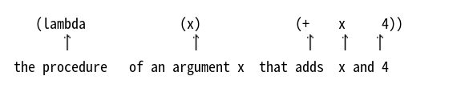
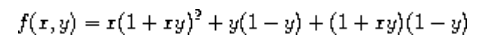
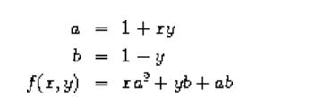

In using sum as in section 1.3.1, it seems terribly awkward to have to define trivial procedures such as pi-term and pi-next just so we can use them as arguments to our higher-order procedure. Rather than define pi-next and pi-term, it would be more convenient to have a way to directly specify ``the procedure that returns its input incremented by 4'' and ``the procedure that returns the reciprocal of its input times its input plus 2.'' We can do this by introducing the special form lambda, which creates procedures. Using lambda we can describe what we want as
(lambda (x) (+ x 4))
and
(lambda (x) (/ 1.0 (* x (+ x 2))))
Then our pi-sum procedure can be expressed without defining any auxiliary procedures as
(define (sum term a next b) (if (> a b) 0 (+ (term a) (sum term (next a) next b)))) (define (pi-sum a b) (sum (lambda (x) (/ 1.0 (* x (+ x 2)))) a ;;结构很清晰 (lambda (x) (+ x 4)) b)) (pi-sum 1 11)
0.372005772005772
(defun sum(term a next b) (if (> a b) 0 (+ (term a) (sum #'term (next a) #'next b)))) (defun pi-sum(a b) (sum (lambda (x) (/ 1.0 (* x (+ x 2)))) a (lambda (x) (+ x 4)) b)) (print (pi-sum 2 11))
pi-sum
Again using lambda, we can write the integral procedure without having to define the auxiliary procedure add-dx:
(define (integral f a b dx) (* (sum f (+ a (/ dx 2.0)) (lambda (x) (+ x dx)) b) dx))
def integral(f, a, b, dx): return sum_recur(f, (a + dx/2), #对应着上面字母的位置. lambda: x: x + dx, b) * dx
In general, lambda is used to create procedures in the same way as define, except that no name is specified for the procedure:
(lambda (<formal-parameters>) <body>)
The resulting procedure is just as much a procedure as one that is created using define. The only difference is that it has not been associated with any name in the environment. In fact,
(define (plus4 x) (+ x 4))
is equivalent to
(define plus4 (lambda (x) (+ x 4)))
We can read a lambda expression as follows:

Like any expression that has a procedure as its value, a lambda expression can be used as the operator in a combination such as
((lambda (x y z) (+ x y (square z))) 1 2 3)
12
or, more generally, in any context where we would normally use a procedure name.
Using let to create local variables
Another use of lambda is in creating local variables. We often need local variables in our procedures other than those that have been bound as formal parameters. For example, suppose we wish to compute the function 
which we could also express as 
In writing a procedure to compute f, we would like to include as local variables not only x and y but also the names of intermediate quantities like a and b. One way to accomplish this is to use an auxiliary procedure to bind the local variables:
(define (f x y) (define (f-helper a b) (+ (* x (square a)) (* y b) (* a b))) (f-helper (+ 1 (* x y)) (- 1 y))) (f 1 2)
Of course, we could use a lambda expression to specify an anonymous procedure for binding our local variables. The body of f then becomes a single call to that procedure:
(define (f x y) ((lambda (a b) (+ (* x (square a)) (* y b) (* a b))) (+ 1 (* x y)) (- 1 y)))
This construct is so useful that there is a special form called let to make its use more convenient. Using let, the f procedure could be written as
(define (f x y) (let ((a (+ 1 (* x y))) (b (- 1 y))) (+ (* x (square a)) (* y b) (* a b)))) ;;所以set或者let取代的是lamba的功能, 下面的body隶属于let
The general form of a let expression is
(let ((<var1> <exp1>)
(<var2> <exp2>)
:
(<varn> <expn>)) <body>)
which can be thought of as saying
let <var1> have the value <exp1> and
<var2> have the value <exp2> and
<varn> have the value <expn>
in <body>
The first part of the let expression is a list of name-expression pairs. When the let is evaluated, each name is associated with the value of the corresponding expression. The body of the let is evaluated with these names bound as local variables. The way this happens is that the let expression is interpreted as an alternate syntax for
((lambda (<var1> ...<varn>) <body>) <exp1> <expn>)
No new mechanism is required in the interpreter in order to provide local variables. A let expression is simply syntactic sugar for the underlying lambda application.
We can see from this equivalence that the scope of a variable specified by a let expression is the body of the let. This implies that:
Let allows one to bind variables as locally as possible to where they are to be used. For example, if the value of x is 5, the value of the expression
(+ (let ((x 3)) ;;就是将let提到前面去. (+ x (* x 10))) 5)
38
is 38. Here, the x in the body of the let is 3, so the value of the let expression is 33. On the other hand, the x that is the second argument to the outermost + is still 5.
The variables' values are computed outside the let. This matters when the expressions that provide the values for the local variables depend upon variables having the same names as the local variables themselves. For example, if the value of x is 2, the expression
(define x 2)
(let ((x 3) ;;不存在shadow的问题.
(y (+ x 2)))
(* x y))
will have the value 12 because, inside the body of the let, x will be 3 and y will be 4 (which is the outer x plus 2).
Sometimes we can use internal definitions to get the same effect as with let. For example, we could have defined the procedure f above as
(define (f x y) (define a (+ 1 (* x y))) (define b (- 1 y)) (+ (* x (square a)) (* y b) (* a b)))
We prefer, however, to use let in situations like this and to use internal define only for internal procedures. 1
Exercise 1.34[x] Suppose we define the procedure．
(define (f g) (g 2)) (f square)
(f (lambda (z) (* z (+ z 1))))
6
What happens if we (perversely) ask the interpreter to evaluate the combination (f f)? Explain.
Define: perversely, perverse [pərˈvɜːrs] 一意孤行 Origin: per(forward,to,away), verse(turn), to turn, turn away, 转过脸去, 油盐不进.
Solution:
First invocation of f will attempt to apply its argument (which is f) to 2. This second invocation will attempt to apply its argument (which is 2) to 2, resulting in error.
(f f) (f 2) (2 2) ; Error ; MIT Scheme reports: The object 2 is not applicable.
(f f) (f (lambda (g) (g 2))) ((lambda (g) (g 2)) (lambda (g) (g 2))) ((lambda (g) (g 2)) ;substitution 2) (2 2) ;;最后返回的结果如此
and
The result is an error: using the substitution rule in (f f) g = f : (g 2) -> (f 2) Again using the substitution rule in (f 2) g = 2 : (f 2)-> (2 2) -> error. The actual error from DrRacket is:
def f(g): return g(2) print(f(f))
- 1
-
Understanding internal definitions well enough to be sure a program means what we intend it to mean requires a more elaborate model of the evaluation process than we have presented in this chapter. The subtleties do not arise with internal definitions of procedures, however. We will return to this issue in section 4.1.6, after we learn more about evaluation.